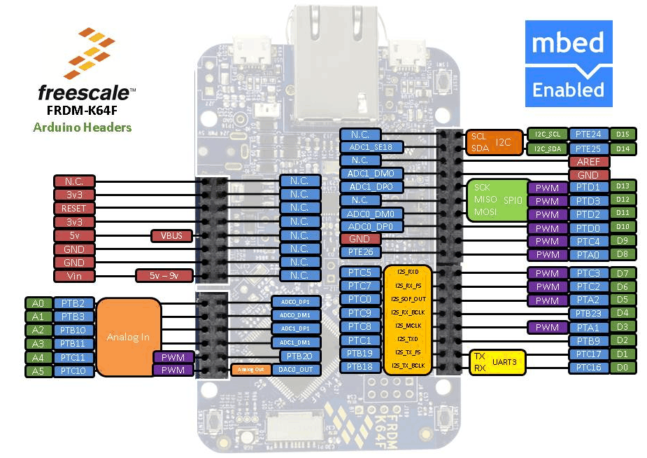
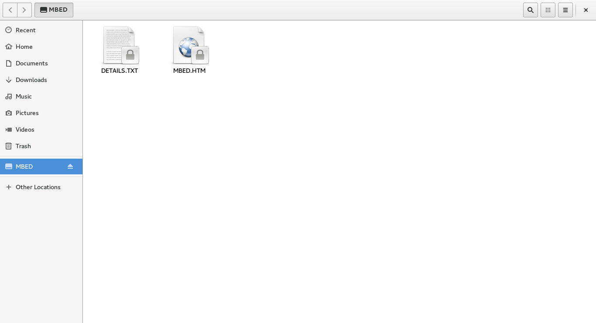
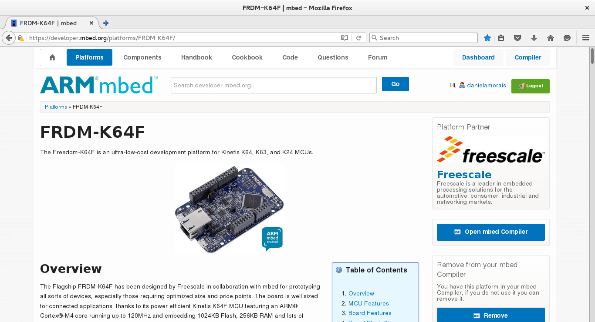
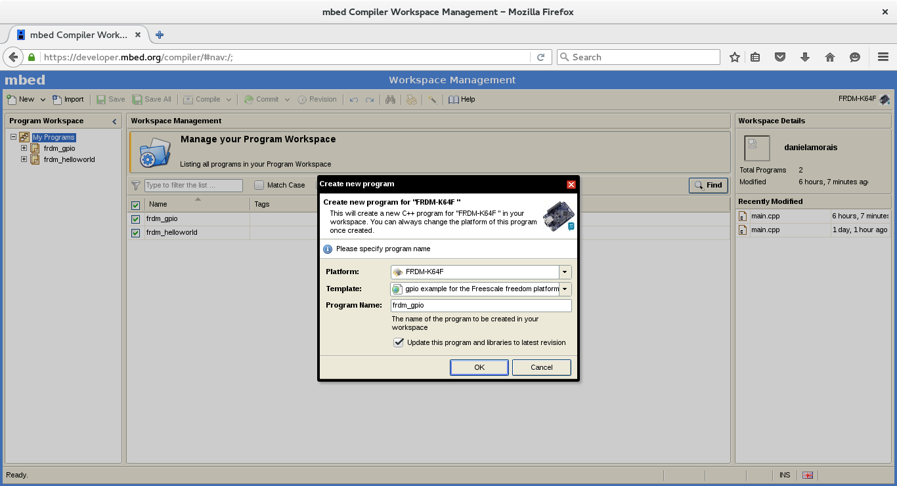

A K64F da Freescale (atual NXP Semiconductors) é uma placa poderosa programável em C++, equipada com um ARM Cortex-M4F no seu microcontrolador que pode operar até 120MHz, possui 1MB de memória flash e 256KB de RAM.
Além disso, é possível fazer debbuging, todos os seus pinos são compatíveis com o Arduino UNO R3 e possui algumas coisas bacanas integradas: leds, botões, Ethernet, microSD, acelerômetro e magnetômetro.
Especificação geral
- MK64FN1M0VLL12 MCU (120 MHz, 1 MB flash memory, 256 KB RAM, low-power, crystal-less USB, and 100 Low profile Quad Flat Package (LQFP))
- Dual role USB interface with micro-B USB Connector
- RGB LED
- FXOS8700CQ accelerometer and magnetometer
- Two user push buttons
- Ethernet
- SDHC
- Add-on RF module: nRF24L01+ Nordic 2.4GHz Radio
- Add-on Bluetooth module: JY-MCU BT board V1.05 BT

E a reação de quem só usa Arduino após conhecer esta placa..
Helloworld.bin
Ao conectar a placa no USB, estes arquivos deverão aparecer e quando acessar MBED.HTM o reconhecimento da placa é feito automaticamente

Após criar o seu cadastro, faça login e a seguinte página será exibida. Essa página contém um overview sobre a placa, tutoriais, diagramas etc. e é nela que você encontrará as respostas para os problemas iniciais

Acesse o compiler, uma IDE Online abrirá com todos os projetos já criados ou clique com o lado direito em My programs > New program... para criar um novo programa e selecione um dos exemplos listados em Templates

Selecione um dos templates que deseja ou insira o seguinte código, o qual de acordo com o botão clicado troca a cor do led para verde ou vermelho
#include "mbed.h"
DigitalOut led_red(LED_RED);
DigitalOut led_green(LED_GREEN);
DigitalIn sw2(SW2);
DigitalIn sw3(SW3);
Serial pc(USBTX, USBRX);
void check_sw2(void){
if (sw2 == 0) {
pc.printf("SW2 button pressed.");
led_red = 0;
led_green = 1;
}
}
void check_sw3(void){
if (sw3 == 0) {
pc.printf("SW3 button pressed.");
led_green = 0;
led_red = 1;
}
}
int main() {
led_green = 1;
led_red = 1;
pc.baud(9600);
pc.printf("Hello World from FRDM-K64F board.\n");
while (true) {
check_sw2();
check_sw3();
wait(0.3);
}
}
Clique em Compiler para gerar um arquivo .bin, o qual você deverá colocar no diretório da placa como se fosse um pendrive! Os leds da placa irão piscar, aperte Reset para carregar o novo programa and then...
 No programa exemplo, a saída serial está configurada para 9600 bauds e para visualizar os outputs no terminal:
No programa exemplo, a saída serial está configurada para 9600 bauds e para visualizar os outputs no terminal:
# screen /dev/ttyACM0

And other cool things..
Conexão com o Azure IoT Hub
https://github.com/Azure/azure-iot-sdks/blob/master/doc/get_started/mbed-freescale-k64f-c.md
Instalar Java ME e rodar aplicações
http://docs.oracle.com/javame/8.1/get-started-freescale-k64/preface.htm#sthref2
Desenvolvimento no Eclipse
http://mcuoneclipse.com/2014/05/26/tutorial-data-logger-with-the-frdm-k64f-board/
Como depurar
https://developer.mbed.org/handbook/Debugging
Poised to become the de facto operating system for the Internet of Things, the cost-free mbed OS is a comprehensive platform for the creation of next-generation IoT devices. The OS includes the connectivity, security and device management functionalities required in virtually every IoT device. When deployed on Freescale’s Kinetis microcontrollers or heterogeneous i.MX processors, developers can bypass low-level software tasks and spend their time on higher-level development, user-experience enhancement and other differentiating features.
Um agradecimento para o pessoal do ABCMakerspace, especialmente o Pacman Pereira por apresentar a Freescale K64F na Campus Party 9